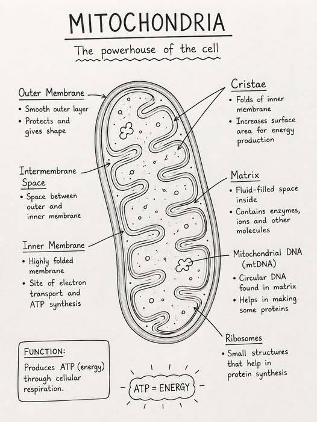

⚡ Mitochondria
The powerhouse of the cell that produces energy through cellular respiration.
Introduction
Mitochondria are rod-shaped or oval, double membrane-bound cell organelles found in almost all eukaryotic cells. They are often called the "Powerhouse of the Cell" because they produce the energy required for all cellular activities.
Inside the mitochondrion, food molecules such as glucose are broken down in the presence of oxygen through a process called cellular respiration. The energy released is stored in the form of ATP (Adenosine Triphosphate), which serves as the energy currency of the cell.
The inner membrane of the mitochondrion is folded into structures called cristae. These folds increase the surface area for respiration and ATP production. The interior contains a fluid called the matrix, which contains enzymes, DNA and ribosomes.
Mitochondria possess their own DNA and ribosomes, allowing them to replicate independently within the cell. Because of this unique feature, they are known as semi-autonomous organelles.
Functions of Mitochondria
- Produce energy (ATP) through cellular respiration.
- Break down food molecules to release energy.
- Supply energy for growth, movement and cell division.
- Help regulate cellular metabolism.
- Contain their own DNA and ribosomes.
📌 Key Points
- Mitochondria are double membrane-bound organelles.
- They are known as the powerhouse of the cell.
- They produce ATP through cellular respiration.
- The inner membrane forms folds called cristae.
- Mitochondria contain their own DNA and ribosomes.
📝 Remember
Mitochondria = Cellular Respiration = ATP Production = Powerhouse of the Cell
🎯 JKBOSE Exam Point
The following questions are frequently asked in JKBOSE examinations:
- Why are mitochondria called the powerhouse of the cell?
- What is ATP?
- What are cristae?
- State any five functions of mitochondria.
- Why are mitochondria called semi-autonomous organelles?

Figure 1.11 — Structure of a mitochondrion showing the outer membrane, inner membrane, cristae and matrix.
❓ Practice Questions
- What are mitochondria?
- Why are mitochondria called the powerhouse of the cell?
- What is ATP?
- Write any five functions of mitochondria.
- What are cristae and why are they important?
- Why are mitochondria called semi-autonomous organelles?